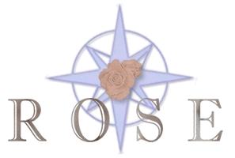

ROSE Web Reference
0.9.5a

- Authors:
- LLNL Staff: Dan Quinlan, Chunhua Liao, and Justin Too
Former LLNL Post-docs (most of them are still active on ROSE project): Thomas Panas, Jeremiah Willcock, Markus Schordan, Qing Yi, and Rich Vuduc
Student Interns at LLNL (Not yet kept up-to-date): Gergo Barany (Technical University of Vienna), Michael Byrd (University of California at Davis), Gabriel Coutinho (Imperial College London), Peter Collingbourne (Imperial College London), Valentin David (University of Bergen, Norway), Jochen Haerdtlein (University of Erlanger, Germany), Vera Hauge (University of Oslo, Norway), Christian Iwainsky (University of Erlanger, Germany), Lingxiao Jiang (University of California at Davis), Alin Jula (Texas A&M), Han Kim (University of California at San Diego), Milind Kulkarni (Cornell University), Markus Kowarschik (University of Erlanger, Germany), Gary Lee (University of California at Berkeley and Purdue University), Chunhua Liao (University of Houston), Ghassan Misherghi. (University of California at Davis), Peter Pirkelbauer (Texas A&M), Bobby Philip (University of Colorado), Radu Popovici (Cornell University), Robert Preissl (Austria), Andreas Saebjornsen (University of Oslo, Norway), Sunjeev Sikand (University of California at San Diego), Andy Stone (Colorado State University at Fort Collins), Danny Thorne (University of Kentucky), Nils Thuerey (University of Erlanger, Germany), Ramakrishna Upadrasta (Colorado State University at Fort Collins), Christian Wiess(Munich University of Technology, Germany), Jeremiah Willcock (Indiana University), Brian White (Cornell University), Gary Yuan (University of California at Davis), and Yuan Zhao (Rice University).
ROSE is a tool for building source-to-source translators (sometimes confused with a preprocessor which is generally less sophisticated internally). ROSE is particularly useful in building custom tools that operate on source code for C, C99, C++, F77, F90, & F2003. Fortran support is currently in development as a result of collaboration with Los Alamos National Laboratory to use their version of the Open Fortran Parser (OFP). Our use of ROSE is focused on the development of optimizing source-to-source tools to support development of large scale scientific applications (applications typically about one million lines of code in size).
This Doxygen generated documentation serves as an html reference to classes within the ROSE source code. There are three forms of documentation for ROSE (two of which are available in both postscript and html), more information can be found at:
Available ROSE Documentation.
The ROSE Web Site is the main location to get more information about the ROSE project. Built in 2005, it has been slow to evolve since we wanted to keep a low profile as long as possible while we focused on robustness issues within the ROSE project and infrastructure.
ROSE Web Site
The ROSE User Manual can be found at (link to LaTeX document):
ROSE User Manual (pdf) .
The ROSE Tutorial can be found at (link to LaTeX document):
ROSE Tutorial (pdf) .
The ROSE Web Reference documents the classes representing the Intermediate Representation (IR) used in ROSE. The IR we use is derived from Sage++ and SageII and is internally referred to as SageIII (with permission from the original authors of Sage++ and SageII).
ROSE Web Reference (this document)
We have three mailing lists for core developers (those who have write access to the internal repository), all developers (anyone who has write access to the internal or external repository) and all users of ROSE (respectively). They are:
(rose-core *at* nersc *dot* gov), web interface: https://mailman.nersc.gov/mailman/listinfo/rose-core
(rose-developer *at* nersc *dot* gov), web interface: https://mailman.nersc.gov/mailman/listinfo/rose-developer
(rose-public *at* nersc *dot* gov), web interface: https://mailman.nersc.gov/mailman/listinfo/rose-public
Note that this information is available in the following files: rose.docs.in (this file, doxygen format), AvailableDocumentation.docs.in (doxygen format), installRose.tex (LaTeX format), and developersAppendix.tex (LaTeX format).
ROSE is a research project which emphasises publication about the new technologies that we are developing, every often as part of external collaborations. Publications specific to the ROSE project can be found at the main ROSE web page.
Project Publications
Project Talks
ROSE is an open source project. The ROSE project is publicly release via the outreach.scidac.gov web site (which hosts the main ROSE web page).
Generated on 20 Jan 2013 for ROSE by
 1.4.7
1.4.7